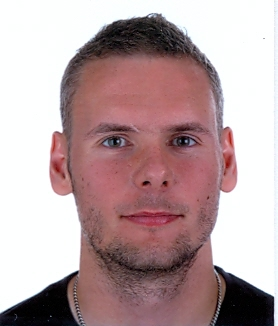

Hej!

Start
Laborationer
Kontakt
Jag heter Martin Carlsson, är 29 år gammal och kommer ursprungligen från Mönsterås. Bor sedan 2010 i Kalmar tillsammans med min sambo. 2013 tillökades familjen med en son som heter Kevin
som i strivande stund är drygt 1,5 år gammal.
2013 flyttade vi även ut från centrala Kalmar till en by som heter Vedby som ligger ca 1,5 mil norr Kalmar. Här bor vi på en liten hästgård då min sambo har ett intresse för
hästar, hon har två stycken.
Mina intressen är:
- Familjen
- Träning
- Jobbet som ordningsvakt
- Motorcyklar
- Bilar
Utbildningar
Följande utbildningar har jag gått:
- Teknikprogrammet 2001-2004
- Inriktning teknik och datorer.
- Väktare 2005
- Steg 1 och 2 (grundutbildning).
- Skyddsvakt 2005
- Tilläggsutbildning på väktare (utökade befogenheter vid skyddsobjekt).
- Ordningsvakt 2008
- Grundutbildning (Är som polisens högra hand men begränsade polisiära befogenheter).
- Elprogrammet 2011-2012
- Inriktning installation.
Har även läst diverse småkurser inom olika områden.
Yrken
Följande yrken har jag arbetat med :
Erfarenhet
Mina erfarenheter vad det gäller programmering kretsar främst kring HTML och CSS.
Har även läst C++ för länge sedan när jag gick på gymnasiet...
Anledningen till att jag sökte just denna utbildingen är främst att jag
tycker programmering är roligt och något jag gärna vill arbeta med.
Dessutom är jobbmöjligheterna goda verkar det som.
Framtiden
Mina tankar gällande framtiden är att, som tidigare nämnt, kunna arbeta
med detta på ett eller annat sätt. Gärna genom eget företag.